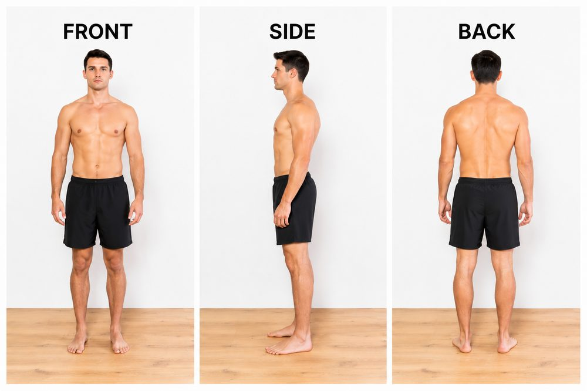
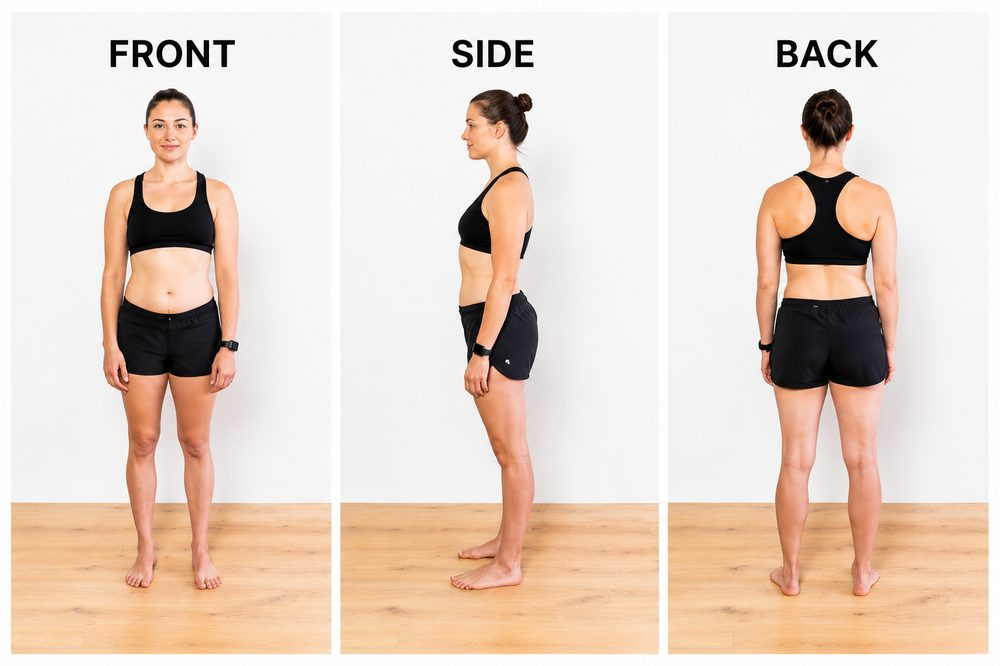

Same day, same time, every week. This keeps water weight, food volume, and bloating consistent between photos so what you're comparing is real change, not noise.
Every Saturday morning, fasted — before any food or liquids.
Same day, same time, every week. This keeps water weight, food volume, and bloating consistent between photos so what you're comparing is real change, not noise.
Three photos every time: front, side, back. Use the templates below as your guide.


Upload your photos into Trainerize and send them through to me on WhatsApp once you've taken them. They're for tracking only and are never shared without your explicit permission.